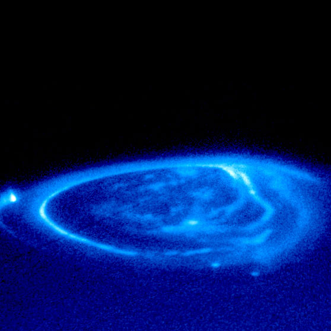
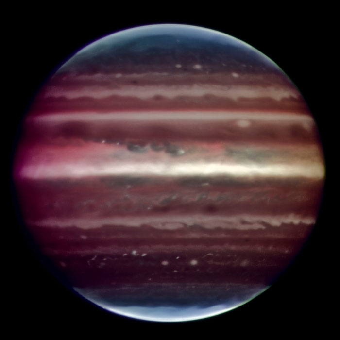
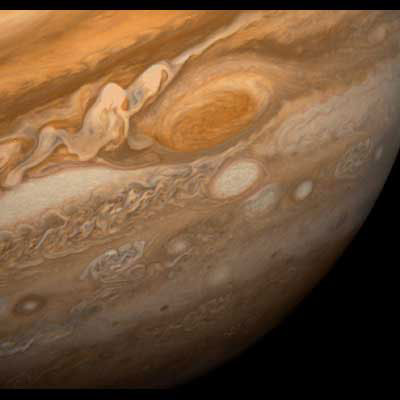

Jupiter is the fifth planet from the Sun and the largest planet in the Solar System. It is a gas giant with mass one-thousandth of that of the Sun but is two and a half times the mass of all the other planets in the Solar System combined. Jupiter is classified as a gas giant along with Saturn, Uranus and Neptune.

Aurora on Jupiter. Three bright dots are created by magnetic flux tubes that connect to the Jovian moons Io (on the left), Ganymede (on the bottom) and Europa (also on the bottom). In addition, the very bright almost circular region, called the main oval, and the fainter polar aurora can be seen.

Image of Jupiter taken in infrared light on the night of 17 August 2008 with the Multi-Conjugate Adaptive Optics Demonstrator (MAD) prototype instrument mounted on ESO's Very Large Telescope. This false color photo is the combination of a series of images taken over a time span of about 20 minutes, through three different filters (2, 2.14, and 2.16 microns).

This view of Jupiter's Great Red Spot and its surroundings was obtained by Voyager 1 on February 25, 1979, when the spacecraft was 9.2 million km (5.7 million mi) from Jupiter. The white oval storm directly below the Great Red Spot is approximately the same diameter as Earth.